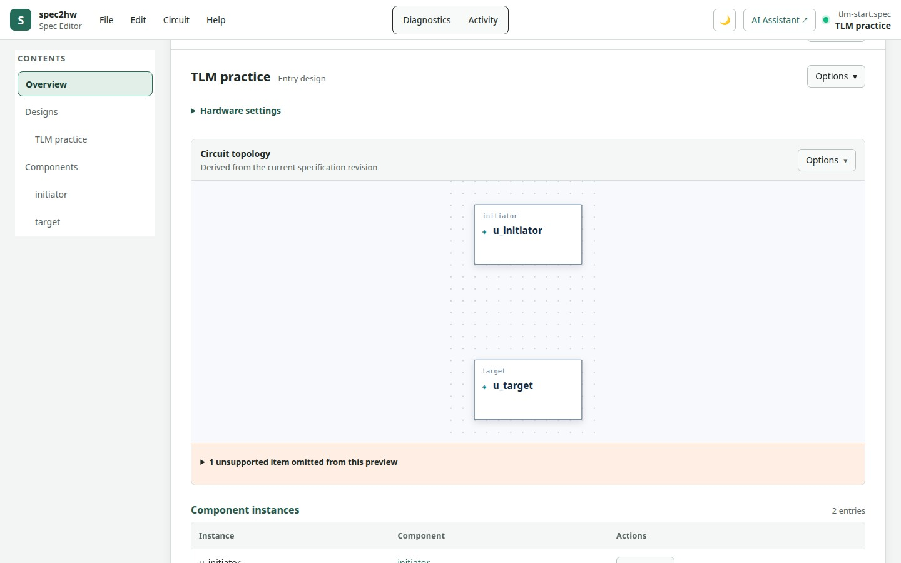
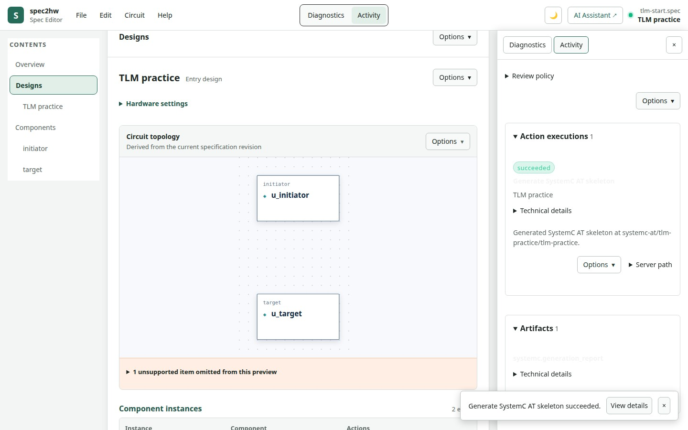

SYSTEMC ACTIVITIES · GUIDED PRACTICE
Generate an approximately-timed skeleton
Publish a TLM skeleton from a separate one-to-one interface example.
Before you start
Spec Editor and tlm-start.spec from the preparation command. SystemC and CMake are needed only for the optional build. The wire-based adder is not a compatible TLM input.
Read each action, do it, then compare the expected result before continuing. Use a fresh prepared start to retry. Reading time and automated execution time are not measured learner practice time.
Actions
Open the TLM start
Opentlm-start.spec. Inspect TLM practice with one initiator and one target.Expected result: This is a separate interface-based example; the wire-only adder is incompatible.
Inspect the connection limit
Inspect the explicit socket connection. The wire preview omits that unsupported item.Expected result: The preview is not a complete view of the TLM interface connection.

The separate TLM example has two instances; its interface connection is omitted from the wire preview. Select the image to view its full size. Check Activity availability
Inspect Options on the TLM practice Design.Expected result: The selected input is compatible with the AT skeleton Activity.
Generate the skeleton
Select Options → Generate SystemC AT skeleton and open Activity manually.Expected result: The job reads the saved TLM topology.
Inspect the published result
Read the report, source revision, output directory, and file list.Expected result: The report refers to the selected TLM Design.

The AT skeleton Activity publishes its own report and source revision. Select the image to view its full size. Inspect its socket binding
Open CMakeLists.txt, Component and Design headers, main program, and generation manifest. Find the initiator-to-target socket binding.Expected result: The project retains one initiator, one target, and one explicit binding.
Optionally build the project
Read the generated README and configure/build with CMake and SystemC when available. Keep all output below your tutorial run directory.Expected result: A missing build tool leaves compilation incomplete even when generation succeeds.
Separate defaults from requirements
Inspect the scaffold’s default timing and response behavior and the duration in main.cpp.Expected result: This is a structural performance-model starting point, not an inferred performance specification or an implementation of the registered adder.


Check your result
The generated project preserves one initiator, one target, and their explicit binding. The report identifies the selected TLM Design and source revision.
Try it yourself
Identify the generated top class and the simulation duration in main.cpp. Separate those scaffold defaults from source requirements.
If it fails
If the Activity rejects ad-hoc wires or fan-out, confirm that you opened tlm-start.spec. Do not run this guide on the registered-adder checkpoint.
Continue
CONTINUEExplore another feature →Reference: systemc activities · Complete example